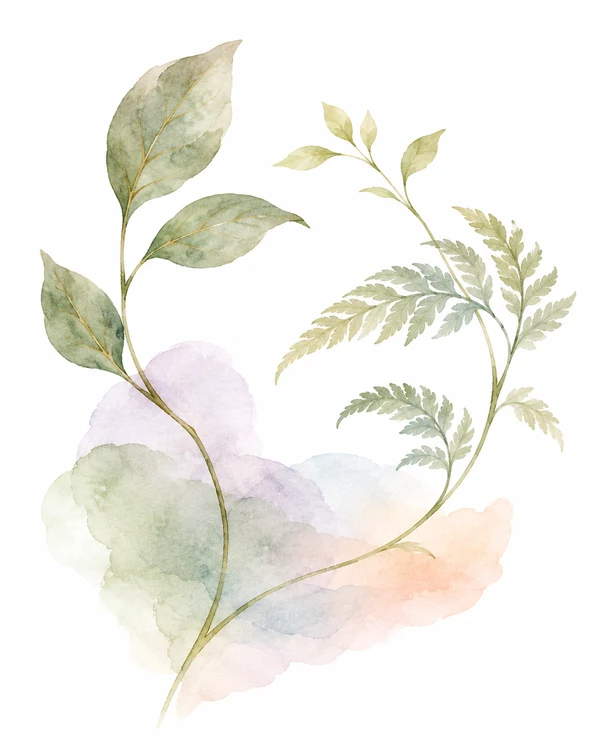

Il mio rapporto con la natura
Nel mondo naturale ho trovato un modo di esercitare l’attenzione.
Osservare e lasciare spazio
Il mondo naturale ha per me un valore speciale. Nel suo incontro ho trovato un modo delicato e non minaccioso per avvicinarmi all'altro: osservare, rispettare tempi e differenze, lasciare spazio a ciò che può crescere senza forzarlo. È un'immagine che sento vicina anche al mio modo di intendere la relazione: un incontro che possa offrire presenza, cura e possibilità, senza imporre direzioni.
Questo è il mio modo di sentire la natura. Ciascuno può riconoscere la propria vitalità in luoghi, attività e legami diversi.

L’approccio negli incontri
Come l’ascolto prende forma nel percorso psicologico.